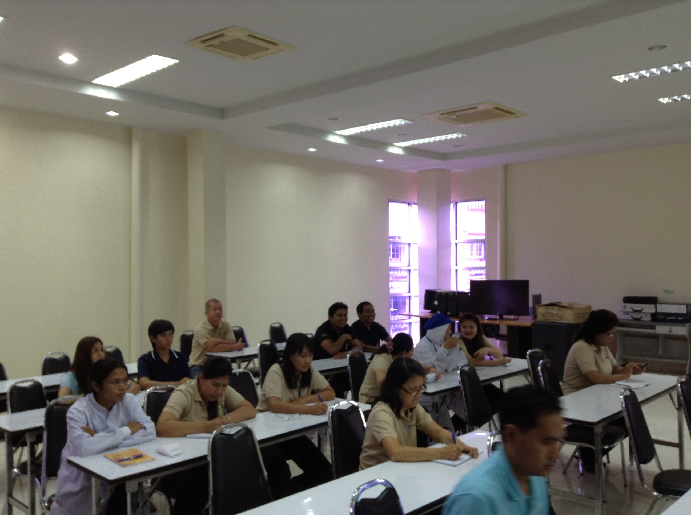
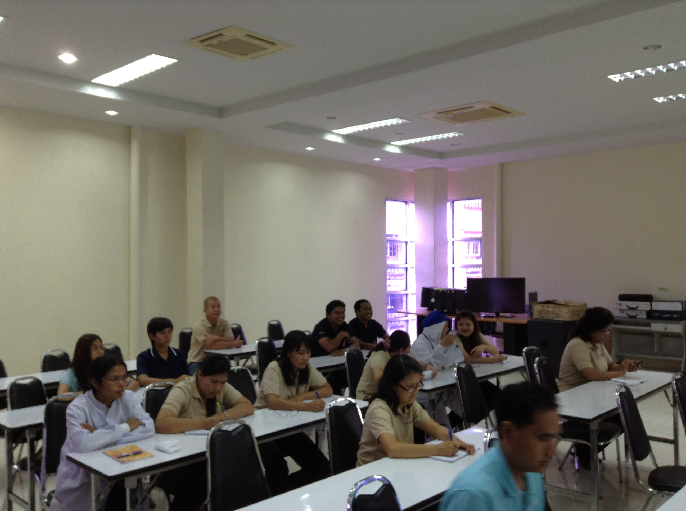

งานที่ปรึกษา
บริษัท ที่ปรึกษาอุตสาหกรรก้าวหน้า จำกัด
มุ่งเน้นการให้บริการงานให้คำแนะนำแก่หน่วยงานภาครัฐ และเอกชนทั้งภาคการผลิตและภาคบริการโดยเน้นเรื่องการลดต้นทุนในการผลิตระบบโลจิสติกส์ และการลดต้นทุนขนส่งสินค้าให้กับภาคเอกชน
บริษัทฯได้เข้าร่วมดำเนินการให้คำปรึกษาแก่หน่วยงานภาครัฐ โดยเฉพาะผู้ให้บริการระบบขนส่งสาธารณะทั้งทางบก ไม่ว่าจะเป็นรถโดยสารประจำทางประเภทต่างๆ ระบบขนส่งทางราง และระบบการขนส่งทางน้ำ
โดยทางบริษัทฯ ยังให้บริการสำรวจข้อมูลที่เกี่ยวข้องกับการขนส่งและจราจร เพื่อนำข้อมูลมาใช้วิเคราะห์ปริมาณการจราจร ความคับคั่งในเส้นทางต่างๆ เพื่อใช้ในการออบแบบเส้นทาง
Timeline
-
2555- โครงการเพิ่มประสิทธิภาพโลจิสติกส์อุตสาหกรรมภาคใต้ ปี 2555 มหาวิทยาลัยสงขลานครินทร์ (วิทยาเขตสุราษฎร์ธานี) (พ.ศ. 2555-2556) โดยมุ่งเน้นการลดต้นทุนด้านโลจิสติกส์ ให้แก่ผู้ประกอบการภาคอุตสาหกรรม
- โครงการส่งเสริมระบบบริหารการจัดการขนส่งเพื่อการประหยัดพลังงาน ปี 2556 (LTM 2) (พ.ศ. 2555-2556) สภาอุตสาหกรรมแห่งประเทศไทย
- โปรแกรมการจัดการระบบสิ่งปฏิกูลภายในครัวเรือน (FSM App) มหาวิทยาลัยเทคโนโลยีแห่งเอเชีย(พ.ศ. 2555) -
2556- โครงการเพิ่มประสิทธิภาพโลจิสติกส์อุตสาหกรรมภาคใต้ ปี 2556 มหาวิทยาลัยสงขลานครินทร์ (วิทยาเขตสุราษฎร์ธานี) (พ.ศ. 2556-2557)
- โครงการส่งเสริมระบบบริหารการจัดการขนส่งเพื่อการประหยัดพลังงาน ปี 2556 (LTM 3) (พ.ศ. 2556-2557) สภาอุตสาหกรรมแห่งประเทศไทย -
2557- โครงการศึกษาผลกระทบทางเศรษฐกิจและสังคมของโครงการนวัตกรรมที่ได้รับการสนับสนุนจากสำนักงานนวัตกรรมแห่งชาติ (องค์การมหาชน) ในปีงบประมาณ 2557
- การสำรวจระบบขนส่งสาธารณะและปริมาณจราจรในเมืองภูมิภาค (พ.ศ. 2557-2558) มหาวิทยาลัยเทคโนโลยีสุรนารี
- การสำรวจข้อมูลความคิดเห็นที่มีต่อการบำรุงรักษาของผู้ประกอบการขนส่ง บริษัท ช. ทวีดอลลาเซียน จำกัด (มหาชน) (พ.ศ. 2557)
- การสำรวจปริมาณสินค้าตามแนวเส้นทางรถไฟสายตะวันออกเฉียงเหนือ บริษัทเอเซียน เอนจิเนียริ่ง คอนซัลแทนต์ จำกัด (พ.ศ. 2557)
- โครงการชุมชนอยู่คู่อุตสาหกรรม : จัดทำการมีส่วนร่วมประชาชน ของสำนักนโยบายและแผนทรัพยากรธรรมชาติและสิ่งแวดล้อม กระทรวงทรัพยากรธรรมชาติและสิ่งแวดล้อม -
2558- โครงการศึกษา สำรวจเพื่อการประเมินและให้ข้อเสนอแนะในการปรับปรุงและออกแบบโครงสร้าง พื้นฐานการขนส่งสาธารณะ เพื่อคนพิการ เด็ก และผู้สูงอายุ ระยะที่ ๒ ของกระทรวงคมนาคม
-
2559- โครงการส่งเสริมระบบบริหารการจัดการขนส่งเพื่อการประหยัดพลังงาน ปี 2559 (LTM 4) สภาอุตสาหกรรมแห่งประเทศไทย
- โครงการพัฒนาปรับปรุงและส่งเสริมการใช้งานโปรแกรมบริหารจัดการขนส่งเพื่อการประหยัดพลังงาน ปี 2559 (LTMA 2) สภาอุตสาหกรรมแห่งประเทศไทย
- โครงการศึกษา สำรวจเพื่อการประเมินและให้ข้อเสนอแนะในการปรับปรุงและออกแบบ โครงสร้าง พื้นฐานการขนส่งสาธารณะ เพื่อคนพิการ เด็ก และผู้สูงอายุ ระยะที่ 3 ของกระทรวงคมนาคม
- การจัดทำข้อมูลรถร่วมบริการ ขสมก. -
2560- โครงการทบทวนแผนวิสาหกิจ พ.ศ. 2555-2559 จัดทำแผนวิสาหกิจ พ.ศ. 2560-2564 และแผนปฏิบัติการงบประมาณ 2560 การรถไฟแห่งประเทศไทย
- โครงการสำรวจความพึงพอใจและไม่พึงพอใจของผู้ใช้บริการรถโดยสารองค์การ รถโดยสารเอกชนร่วมบริการ และรถคู่แข่ง ปี 2560
- สำรวจการจราจรโครงการสำรวจและออกแบบทางหลวง 4 ช่องจราจรทางเลี่ยงเมือง อ.ธาตุพนม -
2561- งานปรับแบบรายละเอียดบริเวณอำเภอสีคิ้วและตัวเมืองนครราชสีมา โครงการก่อสร้างรถไฟทางคู่ช่วงมาบกะเบา-ชุมทางถนนจิระ สัญญาที่ 2 ช่วงคลองขนานจิตร-ชุมทางถนนจิระ 2561 : การรถไฟแห่งประเทศไทย
- โครงการเพิ่มประสิทธิภาพการแปลงแผนพัฒนาฯฉบับที่ 12 สู่การปฏิบัติระดับพื้นที่ของสำนักงานคณะกรรมการพัฒนาการเศรษฐกิจและสังคมแห่งชาติ (สศช.)
- โครงการเพิ่มประสิทธิภาพการจัดทำแผนการสื่อสารภายในองค์กร (ททท.)
- โครงการสำรวจความพึงพอใจและไม่พึงพอใจของผู้ใช้บริการรถโดยสารองค์การและรถคู่แข่ง ปี 2561 องค์การขนส่งมวลชนกรุงเทพ
- โครงการสำรวจปริมาณและความต้องการในการเดินทางของผู้โดยสารท่าอากาศยานนานาชาติอู่ตะเภาระยอง-พัทยา -
2562- โครงการสำรวจความพึงพอใจและไม่พึงพอใจของผู้ใช้บริการรถโดยสารองค์การและรถคู่แข่งองค์การขนส่งมวลชนกรุงเทพ
-
2563- โครงการศึกษาการจัดทำมาตรฐานระบบไฟฟ้าและระบบอาณัติสัญญาณระยะที่ 1(โครงข่ายรถไฟสายประธานของประเทศไทย) ร่วมกับคณะวิศวกรรมศาสตร์ มหาวิทยาลัยมหิดล ของกรมการขนส่งทางราง กระทรวงคมนาคม
-
2564- ที่ปรึกษาบริหารโครงการ (PMC) การออกแบบระบบสารสนเทศ เพื่อสนับสนุนการปฏิบัติงานของกลุ่มธุรกิจการเดินรถ การรถไฟแห่งประเทศไทย (Traffic Operation Management Systems : TOMs)
- โครงการศึกษาและจัดทำระบบประเมินประสิทธิภาพการดำเนินงานการขนส่งทางรางในแต่ละสายทางของประเทศ กรมการขนส่งทางราง (KPI ระบบราง) -
2565- ที่ปรึกษาด้านการขนส่งและจราจร องค์การขนส่งมวลชนกรุงเทพ ขสมก. (Inhouse Consultant)
- โครงการให้คำปรึกษาและการจัดการระบบสถานีสลับแบตเตอรี่จักรยานยนต์ไฟฟ้าในพื้นที่ เขต อ. บางกรวย จ. นนทบุรี (Swapping Station) การไฟฟ้าฝ่ายผลิต (กฟผ.)
- โครงการศึกษาและเปรียบเทียบ นโยบายด้านยานยนต์ไฟฟ้า ระหว่างประเทศไทยและอินโดนีเซีย -
2566- ที่ปรึกษาด้านการประเมินผลเพื่อติดตามและประเมินผลตามนโยบาย กสทช. ที่สำคัญในด้านกิจการโทรคมนาคม ประจำปี 2565 คณะกรรมการติดตามและประเมินผล การปฏิบัติงาน กสทช. (กตป.)